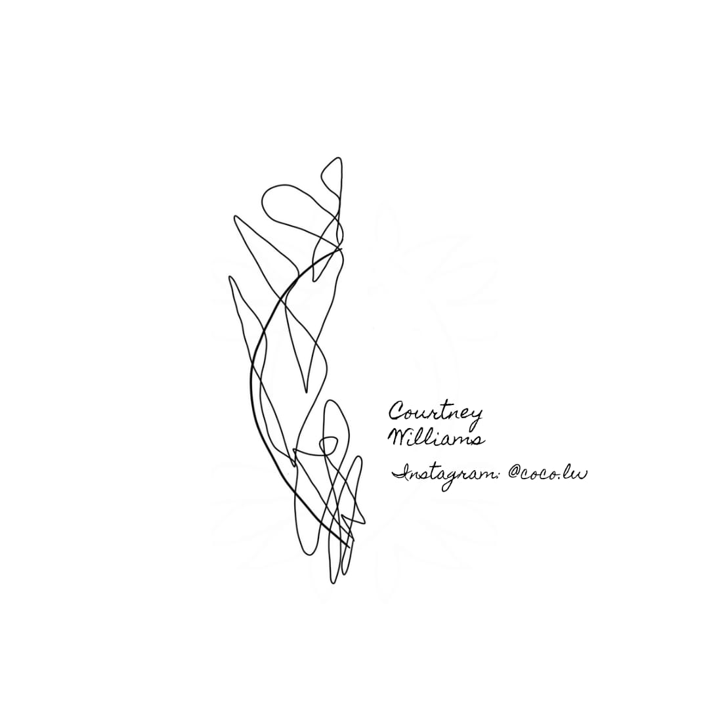

Barron, B. (2021, March 19). Your Complete Guide to HTML Fonts (or Web Fonts) Kinsta.
https://kinsta.com/blog/html-fonts/
Chronixx – Likes. (2017, July 7). Genius.
https://genius.com/Chronixx-likes-lyrics
HTML Color Names. (n.d.). W3Schools. Retrieved September 24, 2021, from
https://www.w3schools.com/tags/ref_colornames.asp
HTML YouTube Videos. (n.d.). W3Schools. Retrieved September 24, 2021, from
https://www.w3schools.com/html/html_youtube.asp
Jim Rohn - 12 Pillars [PDF|TXT]. (n.d.). N/A. Retrieved September 24, 2021, from
https://pdfcookie.com/documents/jim-rohn-12-pillars-z52e465yndv8
Thorne, B. (2020, January 9). Personality in the workplace: are you bringing it? Work Life by Atlassian.
https://www.atlassian.com/blog/teamwork/personality-in-the-workplace